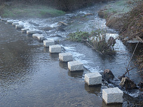

México: Técnica prehispánica para el tratamiento de aguas residuales
Ante la escasez del agua en el país y los altos niveles de contaminación de los cuerpos hidrológicos, académicos de la UNAM - México impulsan los humedales, que es una técnica prehispánica para tratar las aguas residuales.
Víctor Luna, académico de la Facultad de Química, explicó que los humedales reducen entre 96 y 98 por ciento la materia orgánica del agua, y alrededor del 99.6 por ciento de los microorganismos. No obstante, aclaró, a pesar de ser un porcentaje alto, si el agua contiene un millón o diez millones de bacterias y se le quita el 99.6, todavía queda una cantidad de agua que se limpia con cloro, de acuerdo con la ley establecida. El académico de la Facultad de Química (FQ), Víctor Luna Pabello, explicó que en México no se colecta más del 25 por ciento del agua que debería ser tratada, del agua que se capta no se procesa toda, y de la que se limpia no toda se utiliza.
El problema de los residuos en el agua

Prácticamente, las aguas tienen problemas por la presencia de residuos, sobre todo los que se encuentran en el Distrito Federal, incluidos los lagos artificiales porque están alimentados por plantas de tratamiento de aguas residuales que no fueron diseñadas para eliminar nutrimentos, sino para quitar los elementos carbonosos disueltos y disminuir contaminantes sedimentables y suspendidos. En cambio, la técnica prehispánica permite controlar la desinfección sin utilizar cloro. La técnica prehispánica usa un sistema que no produce compuestos organoclorados y no genera contaminación adicional.
El tratamiento de aguas
Cuando se usa cloro en el tratamiento del agua se forman compuestos que pueden ser carcinógenos para el hombre y otros seres vivos. Por esta razón, los integrantes de la Facultad de Química propusieron la utilización de humedales artificiales para el sistema de canales de Xochimilco, porque mejorarían la calidad de los cultivos y no tendrían microorganismos patógenos o prohibidos por las leyes. Además, con el uso de la técnica prehispánica no se formarían malos olores ni focos de infección, porque se controlarían esas entradas y no desprenderían aromas desagradables, como ácido sulfhídrico, que puede provocar dolor de cabeza. Además de la parte estética, el agua podría usarse también en los jardines del lugar. 
El proceso de saneamiento de Xochimilco, expresó Luna Pabello, ha causado que la gente de algunas comunidades, como las de San Gregorio Atlapulco, se interesen en consultar sobre esta tecnología para obtener agua de mejor calidad para producir vegetales prácticamente libres de patógenos y de contaminantes, así como para la preservación de la vida silvestre.
En una siguiente etapa, los académicos buscarán desinfectar por completo el volumen de materias que se introducen al agua. Por el momento, ha eliminado el nitrógeno y el fósforo, pero todavía quedan bacterias por eliminar.